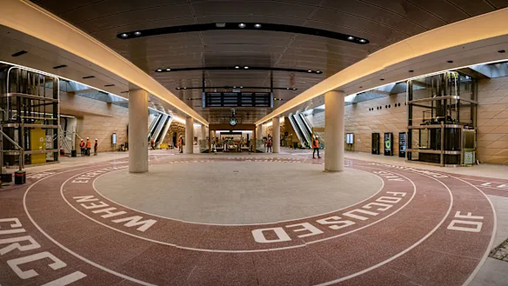

{{cur.dist}}
{{cur.primary}}
{{cur.street}}
NW
N
NE
{{dest}}
{{mins}} min · {{metres}}
arrive {{arriveAt}}
{{thenText}}
Glance down for map
Look up
10:15
Where to?
Pinch to select, or just say where you're going
Listening…
Say a place, or pick one below
In this station
{{item.name}}
{{item.sub}}
Cancel
{{dest}}
{{destSub}} · walking
Straight to the gates
Escalator to street · 85 m
2 min
Step-free
Via the lifts · 110 m
+2
4 min
Start walking
Cancel
You're at the gates
Tap off, then up the escalator to street level
{{totalLine}} walked
Done
Prototype controls
Stand-ins for walking and head movement. Everything above the line is what the wearer sees.
Walk to next step
{{lookLabel}}
Restart